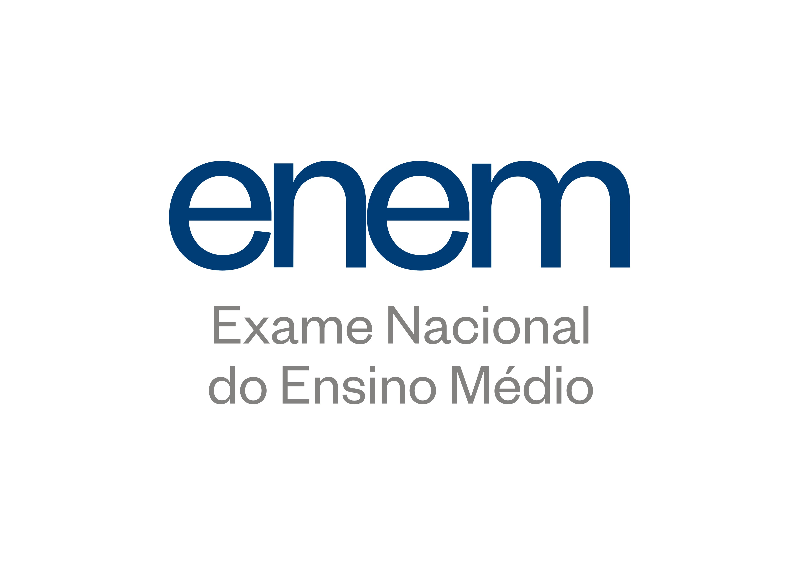
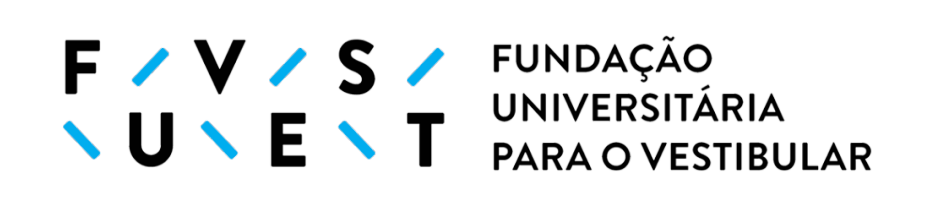

Saiba mais sobre o Enem e os maiores vestibulares do Brasil

O que é Enem?
O Exame Nacional do Ensino Médio (Enem) foi criado em 1998 com o objetivo de avaliar o desempenho escolar dos estudantes do ensino médio ao término da educação básica. Porém, foi em 2009 que o exame teve sua metodologia aperfeiçoada e passou a ser utilizado como mecanismo de acesso à educação superior. A nota do Enem é utilizada como critério de seleção para bolsas no Programa Universidade para Todos (ProUni) ou para vagas em universidades e instituições públicas de ensino superior pelo Sistema de Seleção Unificada (SiSU).
Como funciona o Enem?
Qualquer pessoa que esteja cursando o Ensino Médio ou já o tenha concluído pode se inscrever no Enem, bastando apenas pagar a taxa (caso não seja isento) e comparecer ao local indicado no dia da prova e fazer o exame. A prova é aplicada em dois domingos consecutivos, entre os meses de outubro e novembro, abordando quatro áreas do conhecimento: Ciências Humanas, Ciências da Natureza, Linguagens e Códigos e Matemática. Cada área tem 45 questões (totalizando 180), além de uma redação dissertativa-argumentativa.
O que é SiSU?
O Sistema de Seleção Unificada (SiSU) é um programa criado pelo MEC que viabiliza o ingresso de estudantes em universidades públicas brasileiras com base na nota do Enem. O SiSU é realizado duas vezes ao ano, semestralmente, com a primeira edição ocorrendo no mês de janeiro e a segunda no segundo semestre do ano. As universidades que optam por utilizar o SiSU oferecem um certo número de vagas e, ao fim do processo seletivo, os alunos mais bem classificados são escolhidos. Na inscrição, o candidato escolhe até duas opções de cursos disponíveis, e caso seja aprovado em uma das opções, ele deixa a lista de espera por uma vaga. Existem três modalidades de concorrência: ampla concorrência, ação afirmativa (dependem da universidade e não são obrigatórias como a lei de cotas), e lei de cotas (para onde metade das vagas são destinadas, podendo ser cotas raciais ou para quem estudou em escola pública).

O que é Fuvest?
A Fundação Universitária para o Vestibular (Fuvest) é a instituição responsável pela elaboração do vestibular da Universidade de São Paulo (USP), considerado o segundo maior processo de seleção universitária do Brasil. A organização foi criada em 1976 com o objetivo de desenvolver um vestibular que pudesse selecionar os melhores alunos para integrar o corpo discente da USP. O vestibular da USP é dividido em duas fases: uma com questões de múltipla escolha e outra com questões dissertativas. A primeira fase tem cinco horas de duração e é composta de 90 questões de múltipla escolha sobre as disciplinas da BNCC, além de questões interdisciplinares, selecionando os candidatos para a segunda fase e compondo uma das três notas usadas na classificação final. A segunda fase é feita em dois dias, composta de questões dissertativas sobre português e duas a quatro disciplinas dependendo da escolha de carreira do candidato, além de uma redação dissertativa-argumentativa.

O que é Comvest?
A Comissão Permanente para os Vestibulares (Comvest) administra o vestibular da Universidade Estadual de Campinas (Unicamp), sendo uma organização gerenciada pela própria universidade. A primeira fase é composta de 90 questões de múltipla escolha, com 4 alternativas cada. A segunda fase é feita em três dias, com uma prova de questões dissertativas de 4 horas de duração sobre as disciplinas relacionadas ao curso de escolha em cada dia e duas redações de temas diferentes.